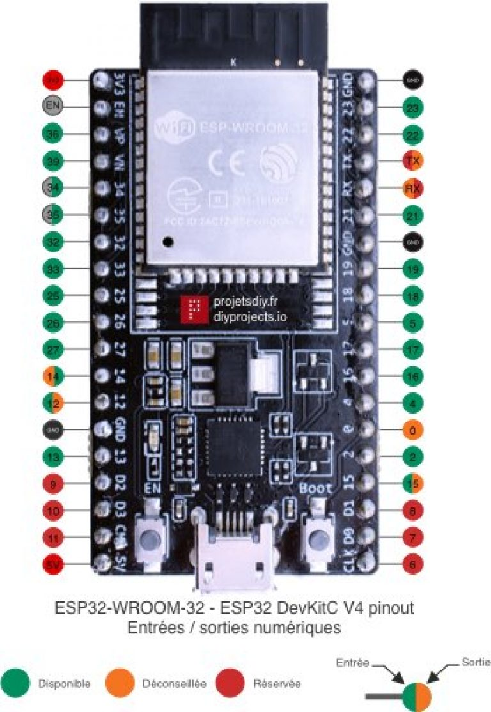
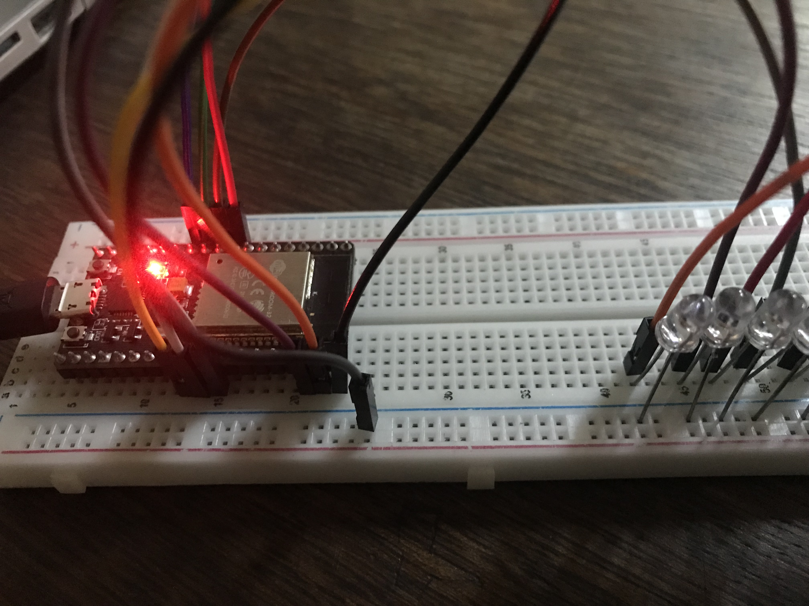
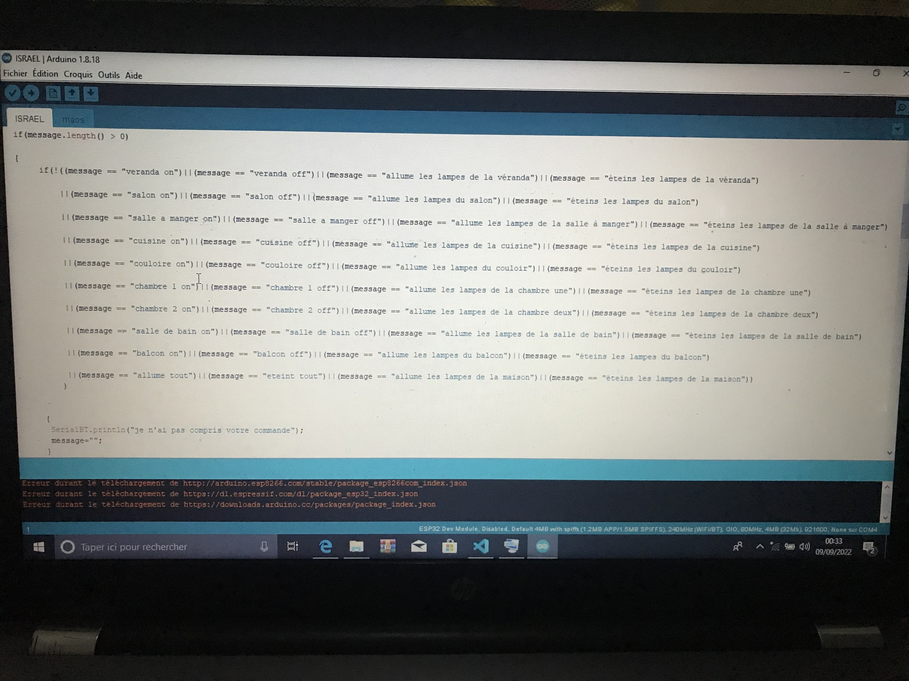
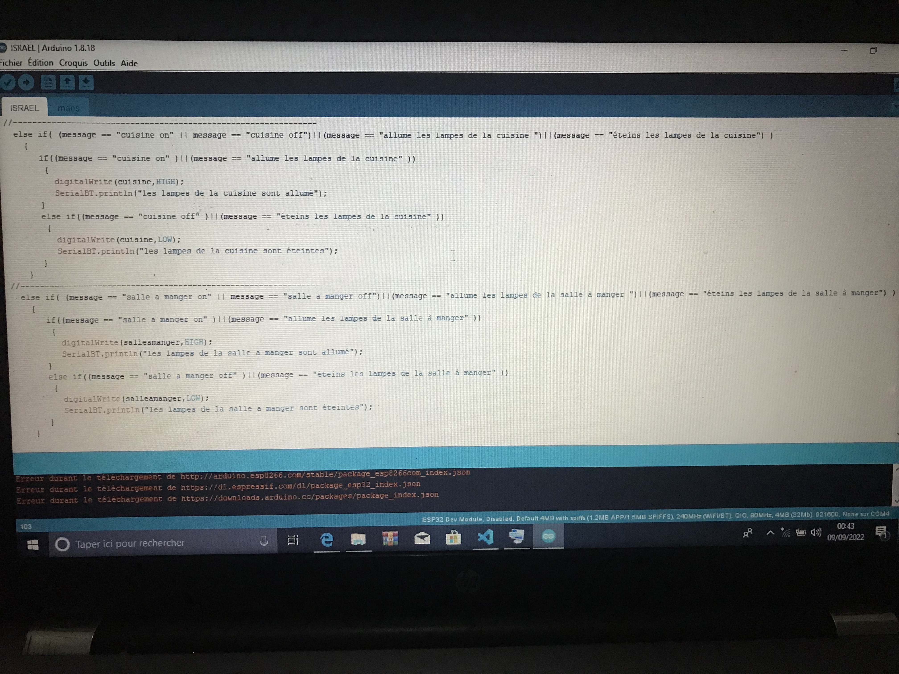

SPARTIATE COMPAGNIE vous propose sa prèmier application denomé NDAKU qui permet d'effectuer les commande à distance des lampes via un smart phone.
Pour la reussite de notre projet,nous avons eut à utiliser
1°. kodular creator (il s'agit d'un créateur d'application Android par glisser-déposer.) il suffit de glisser-deposer
quelques composants et de joindre des blocs pour que l'application souhaitée soit prête!
 |
 |
|  |  |
initialisation |
commande pour les message vocaux  |
commande pour la véranda e le salon  |
commande pour la cuisine et la salle à manger  |
pour la véranda :
(message == "veranda on")où(message == "veranda off")où(message == "allume les lampes de la véranda")où(message == "éteins les lampes de la véranda")
pour le salon :
(message == "salon on")où(message == "salon off")où(message == "allume les lampes du salon")où(message == "éteins les lampes du salon")
pour la salle à manger :
(message == "salle a manger on")où(message == "salle a manger off")où(message == "allume les lampes de la salle à manger")où(message == "éteins les lampes de la salle à manger")
pour la cuisine :
(message == "cuisine on")où(message == "cuisine off")où(message == "allume les lampes de la cuisine")où(message == "éteins les lampes de la cuisine")
pour le couloir :
(message == "couloire on")où(message == "couloire off")où(message == "allume les lampes du couloir")où(message == "éteins les lampes du couloir")
pour la chambre 1 :
(message == "chambre 1 on")où(message == "chambre 1 off")où(message == "allume les lampes de la chambre 1")où(message == "éteins les lampes de la chambre 1")
pour la chambre deux :
(message == "chambre 2 on")où(message == "chambre 2 off")où(message == "allume les lampes de la chambre deux")où(message == "éteins les lampes de la chambre deux")
pour la salle de bain :
(message == "salle de bain on")où(message == "salle de bain off")où(message == "allume les lampes de la salle de bain")où(message == "éteins les lampes de la salle de bain")
pour le balcon :
(message == "balcon on")où(message == "balcon off")où(message == "allume les lampes du balcon")où(message == "éteins les lampes du balcon")
pour toute la maison :
(message == "allume tout")où(message == "eteint tout")où(message == "allume les lampes de la maison")où(message == "éteins les lampes de la maison"))
SPARTIATE COMPAGNIE s'engage a mettre tous le moyens en oeuvre pour changer la vie de nos maisons et nous rendre la vie bien meilleur et facile.
SPARTIATE COMPAGNIE vous presente des nombreuses propositions que l'agence a etudiée et qui doivent etre adaptée à vos besoins et à vos budgets.